Patrimoniul cultural al huțulilor din Bucovina
Nouă luni de documentare în satele huțule din Obcinile Bucovinei, cu meșteri, ciobani, încondeietoare și interpreți, transformate în 7 documentare, o platformă online, peste 150 de fotografii, DVD-uri și un festival de două zile la Suceava.
Obiectivul general
Documentarea, evidențierea, promovarea și revitalizarea elementelor de patrimoniu cultural imaterial specifice huțulilor din Bucovina, în scopul punerii în valoare și consolidării diversității culturale, în context european.
Obiective specifice
- Creșterea gradului de implicare a 250 de membri aparținând comunității huțulilor din județul Suceava în activități de documentare și promovare a patrimoniului cultural imaterial, prin participarea la activități de cercetare-documentare, la realizarea de materiale de promovare, la o expoziție foto, la workshop-uri ale meșteșugurilor tradiționale, spectacole culturale și crearea unei baze de date cuprinzând aspecte specifice ale culturii, tradițiilor și meșteșugurilor huțulilor, prin intermediul unei platforme online;
- Facilitarea accesului unui număr de minimum 5.000 de persoane aparținând publicului larg la cultura, tradițiile și meșteșugurile specifice ale huțulilor din județul Suceava, prin diseminarea de materiale de promovare, prin participarea la un festival de 2 zile al tradițiilor huțulilor din Bucovina (expoziție foto, 3 workshop-uri ale meșteșugurilor tradiționale și un spectacol cultural), precum și prin accesarea unei platforme online de promovare a patrimoniului cultural imaterial al huțulilor.
Despre comunitate
Huțulii sunt un grup etnic de origine slavă, vorbitor al unui grai ucrainean, așezat în Obcinile Bucovinei începând cu sfârșitul secolului al XVIII-lea, când Bucovina a intrat în Imperiul Habsburgic. În județul Suceava trăiesc la Brodina, Breaza, Cârlibaba, Moldova-Sulița, Moldovița, Izvoarele Sucevei, Vatra Moldoviței, Ulma și în satele din jur. Ocupațiile și meșteșugurile lor tradiționale, documentate în proiect: creșterea cailor huțuli (Herghelia Lucina, înființată în 1856, singurul nucleu de selecție al rasei din România), oieritul, lemnăritul, încondeierea ouălor, țesutul, prelucrarea osului și a cornului, gastronomia cu mămăligă cu tochitură, sărmăluțe cu urdă, huslincă, plăcinte pe foi de varză și piroște. Mihai Eminescu scria în 1876 că huțulii duc „o viață de pasăre pribeagă, originală și liberă”.
Activitățile proiectului
Cercetare și documentare pe teren
Din martie până în octombrie 2023, echipa proiectului și un expert etnograf au făcut 21 de deplasări de documentare în 11 localități, au lucrat la Biblioteca Bucovinei și au stat de vorbă cu oamenii care păstrează tradițiile: scriitorul Casian Balabasciuc și etnograful Aurel Prepeliuc, ciobanul Mugurel Dujac din Secrieș, încondeietoarele Viorica Semeniuc din Moldovița și Rodica Boiciuc din Ciumârna, meșterul lemnar Florin Constantin Cramariuc, interpretele Angelica Flutur și Eliza Hechelciuc, corul de copii din Moldova-Sulița, primarul comunei Cârlibaba și crescătorii de cai de la Herghelia Lucina. Echipa a participat și a fotografiat evenimentele comunității: „Ciocnitul ouălor de Paște” de la Mănăstirea Humorului (16 aprilie 2023, ediția a XIII-a, peste 40 de concurenți), Festivalul ouălor încondeiate de la Ciocănești și Festivalul Național al Minorităților de la Cârlibaba (29 iunie 2023, ediția a X-a, peste 200 de participanți).
7 documentare TV
Pe baza interviurilor filmate au fost realizate șapte documentare: „Meșteșugul încondeierii ouălor”, „Ocupația oieritului la huțulii din Bucovina”, „Meșteșugul lemnăritului la huțulii din Bucovina”, „Creșterea cailor huțuli”, „Tradițiile culinare ale huțulilor din Bucovina”, „Folclorul huțulilor din Bucovina” (câte 5 minute) și „Cultura, tradițiile, meșteșugurile și folclorul huțulilor” (10 minute). Au fost difuzate la Intermedia TV Suceava în perioada 16–24 octombrie 2023 și publicate online pe platforma unui post de radio regional și pe YouTube.
Platforma online hutuli.ro
Un site dedicat, optimizat pentru telefon, cu secțiuni despre proiect, despre huțuli și etnia huțulă, articole documentate despre oierit, lemnărit, închistritul ouălor, creșterea cailor huțuli și arta culinară, reportaje de la evenimentele comunității și de la festival, documentarele, afișul, pliantul, comunicatele și spotul radio ale proiectului. Site-ul rămâne activ la hutuli.ro.
Fotografie, tipărituri și DVD
Peste 150 de fotografii profesioniste realizate în proiect (încondeierea ouălor, atelierul meșterului lemnar, Herghelia Lucina, arta culinară, satele huțule, evenimentele comunității), 25 de afișe, 270 de pliante și 210 DVD-uri cu cele șapte documentare și fotografiile, distribuite la festival și la conferința finală.
Festivalul tradițiilor huțulilor din Bucovina
12–13 octombrie 2023, Shopping City Suceava. În prima zi: vernisajul expoziției de fotografie (50 de imagini pe 9 panouri, expuse două zile) și trei workshop-uri demonstrative cu meșteri huțuli, Florin Constantin Cramariuc (prelucrarea lemnului), Viorica Semeniuc (încondeierea ouălor) și Diana Elena Gavriliu-Radu (pielărie), cu documentarele rulând pe ecran. În a doua zi: spectacol folcloric de două ore cu ansamblul „Plai de dor” al Școlii Gimnaziale Moldovița și cu grupul de 27 de elevi al Școlii Gimnaziale Argel, comuna Moldovița, cu poezii, cântece, o scenetă în limba huțulă și dansuri tradiționale. Peste 600 de vizitatori și spectatori în cele două zile, 250 de pliante și 200 de DVD-uri distribuite.
Promovare
Conferință de presă de lansare la 7 aprilie 2023 la Suceava și conferință finală la 21 octombrie 2023 la Voroneț, două comunicate în cotidianul regional, spot radio de 39 de secunde difuzat de 20 de ori pe Impact FM.
Rezultate în cifre
| Rezultat | Realizat |
|---|---|
| Localități documentate / deplasări | 11 / 21 |
| Documentare TV | 7 (6 × 5 min, 1 × 10 min), 7 difuzări TV și publicare online |
| Platformă online | hutuli.ro, cu 12 articole documentare și de eveniment |
| Fotografii profesioniste | peste 150 |
| Tipărituri / DVD-uri | 25 de afișe, 270 de pliante / 210 DVD-uri |
| Festival | 2 zile, expoziție cu 50 de fotografii, 3 workshop-uri cu 3 meșteri, spectacol cu 2 ansambluri și 40 de elevi, peste 600 de vizitatori |
| Evenimente ale comunității documentate | 3 |
| Conferințe / comunicate de presă / spot radio | 2 / 2 / 20 de difuzări |
Fotografii

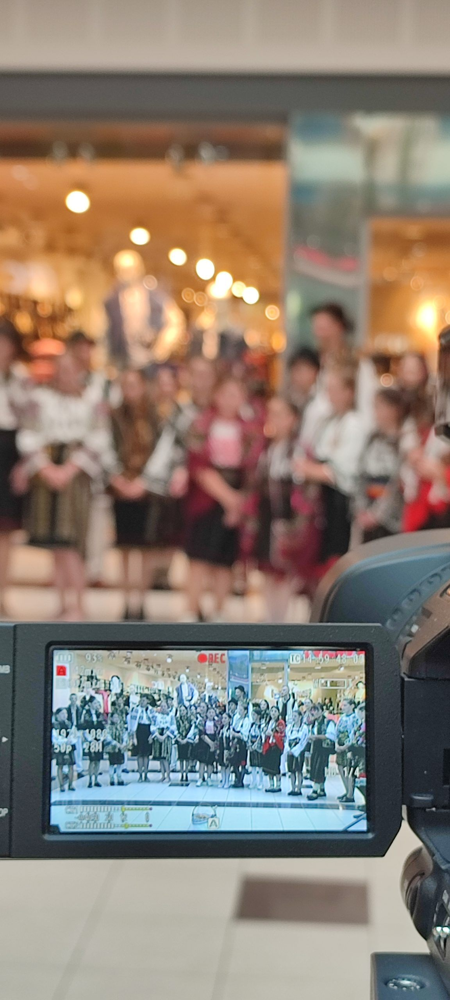


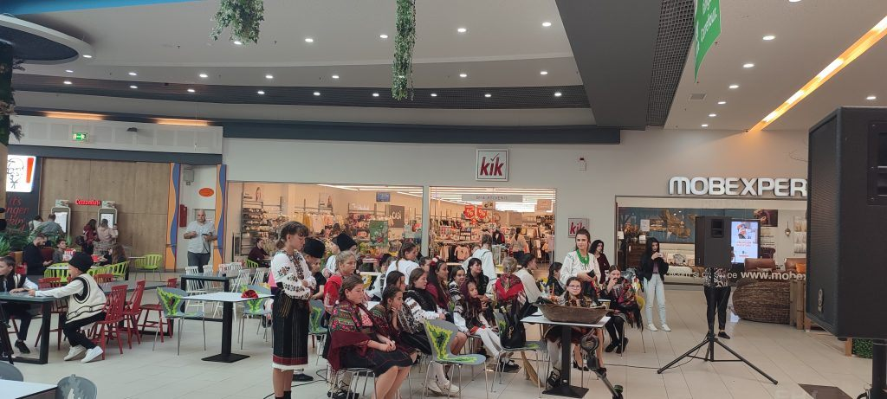

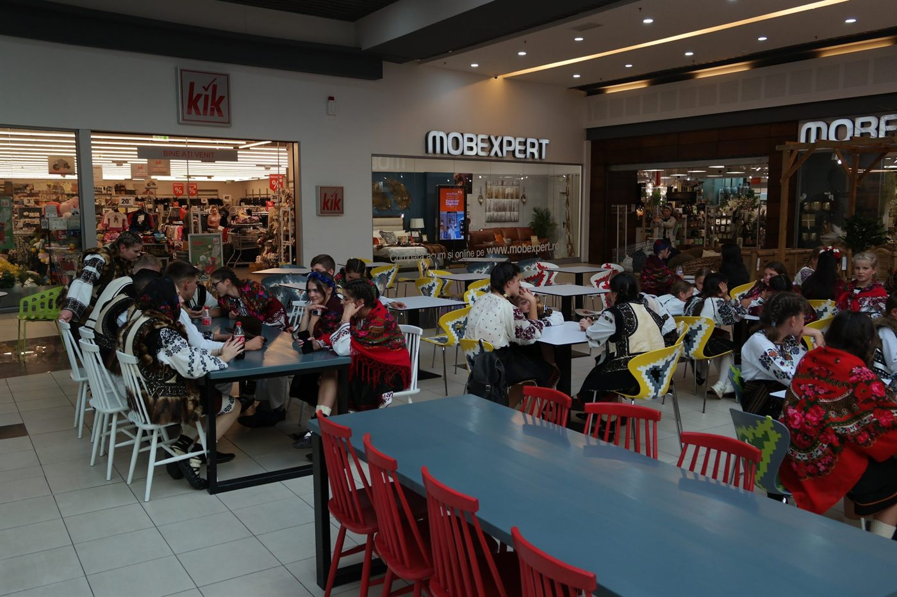
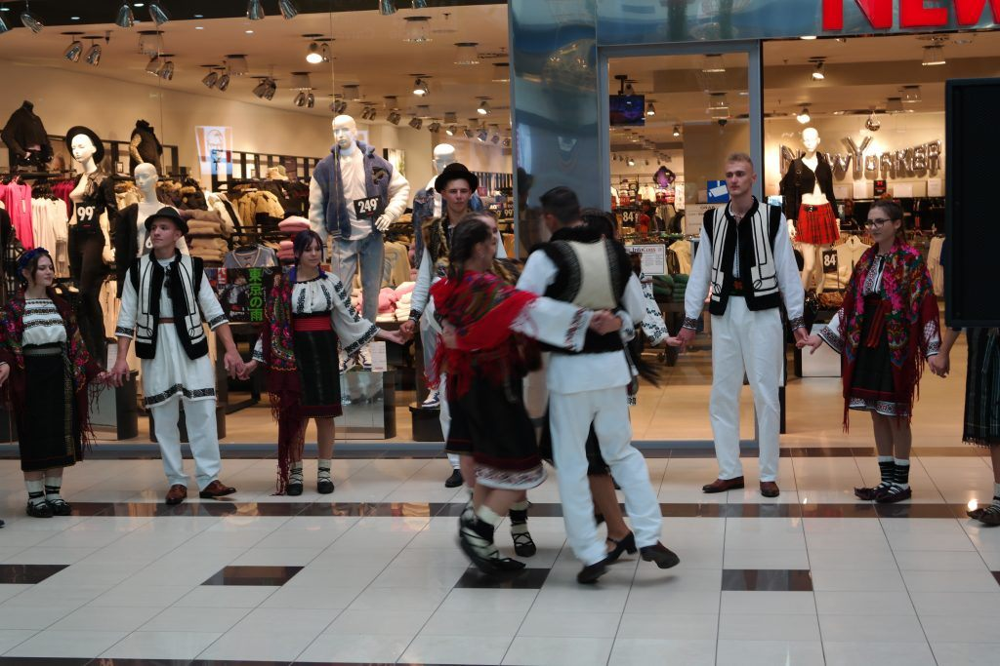
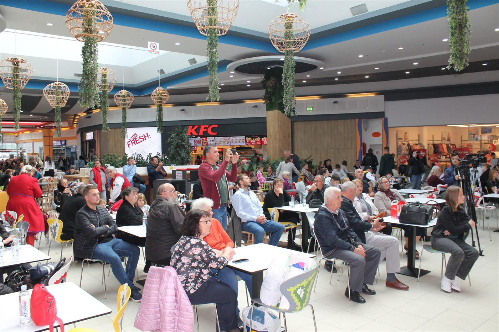
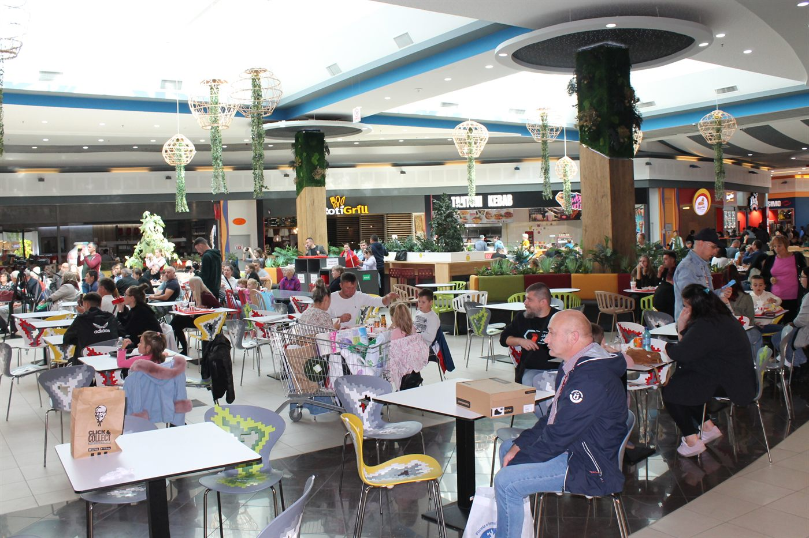
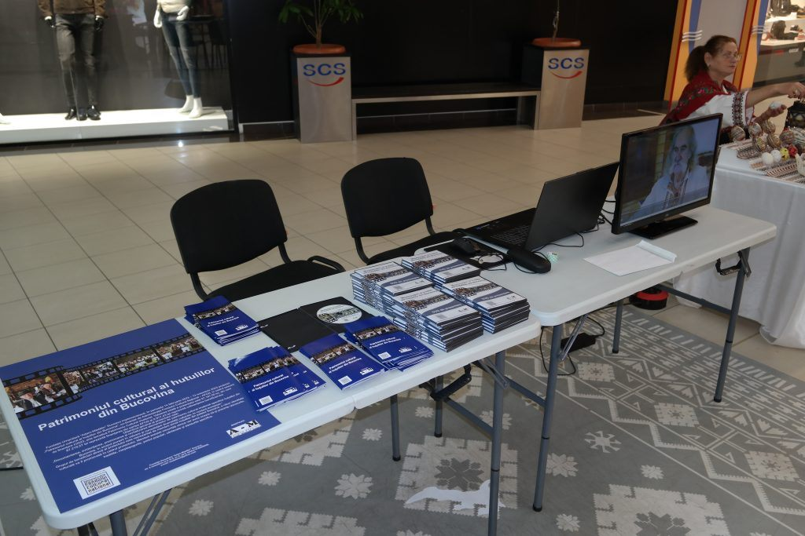
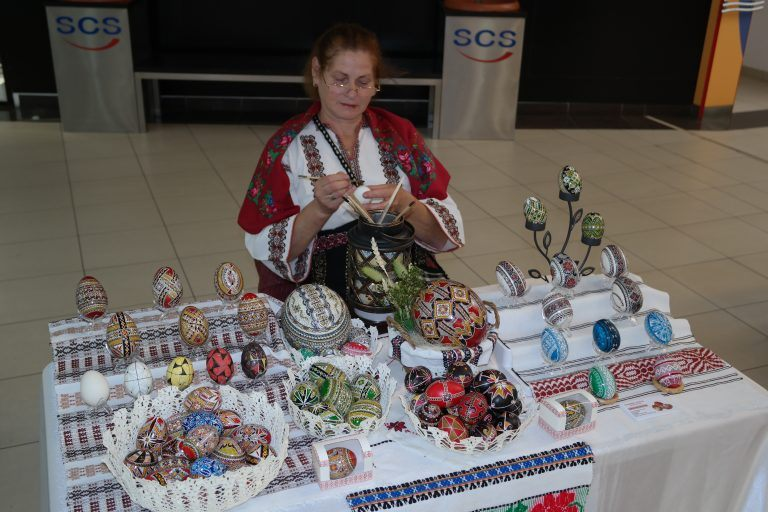
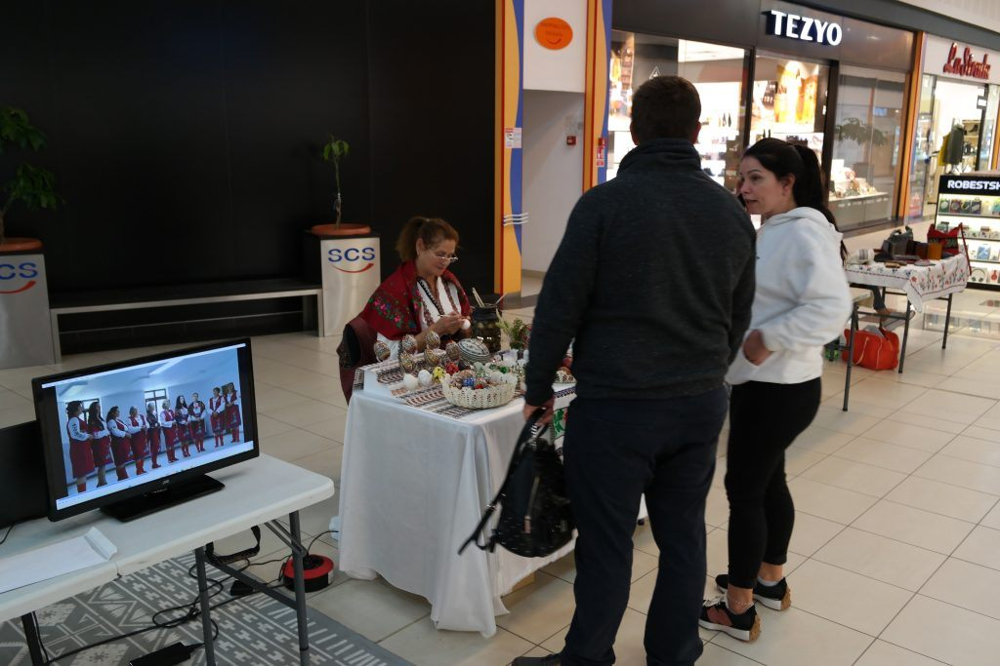
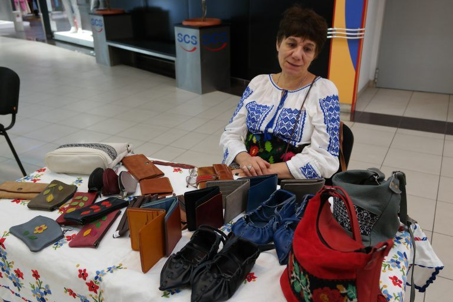


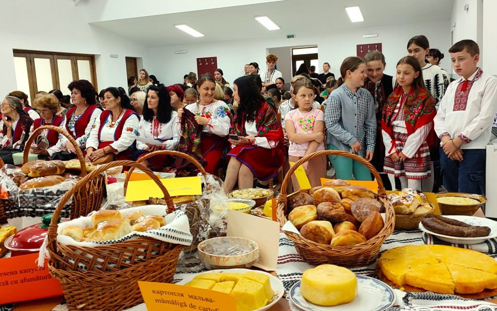
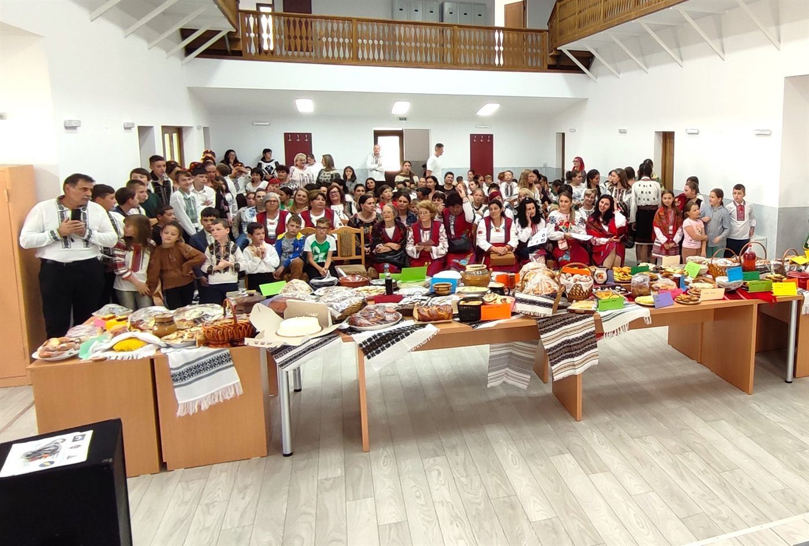


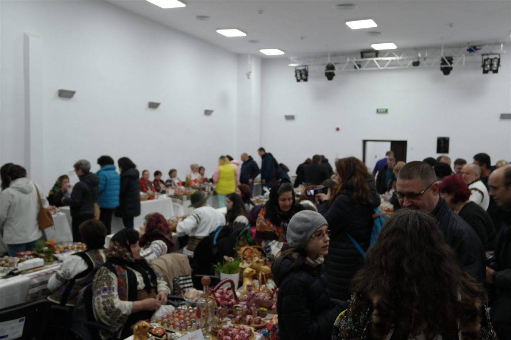
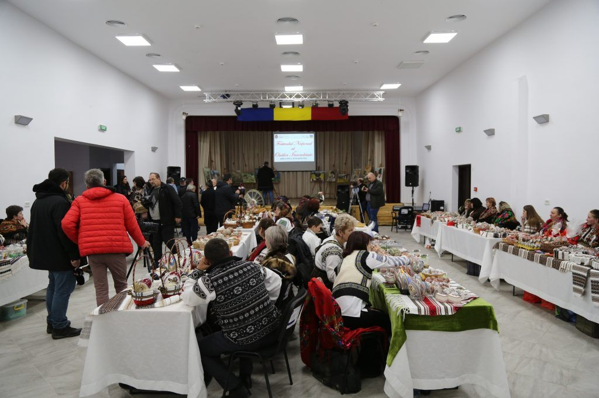
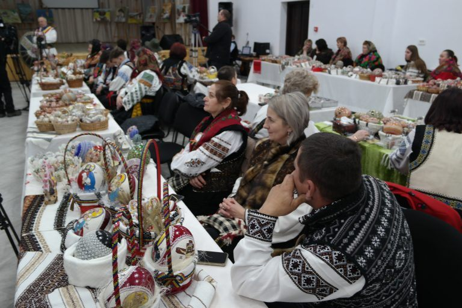
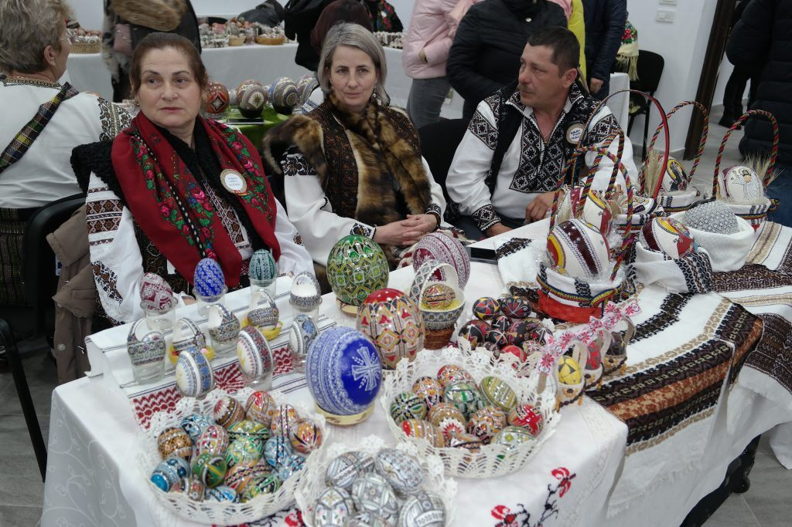
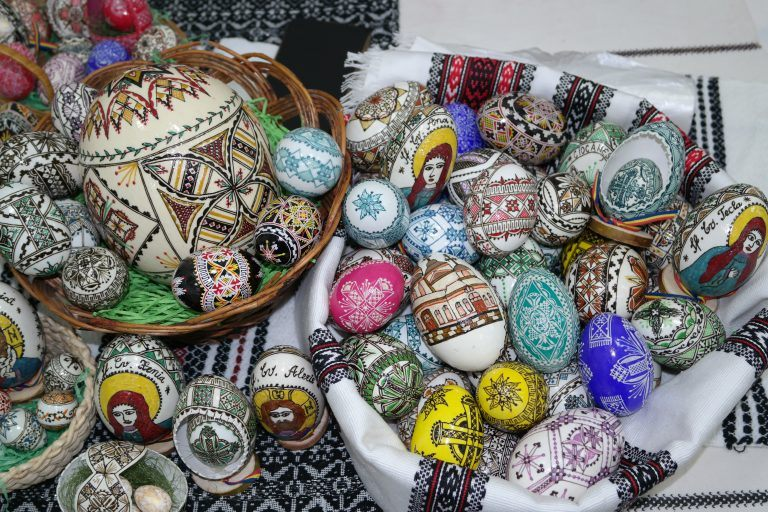


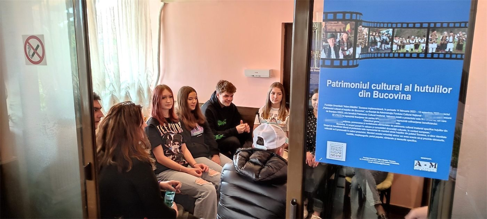

Documentarele
Comunicat de presă – lansare (PDF) · Comunicat de presă – final (PDF) · Afișul festivalului (PDF)